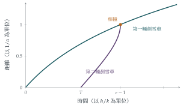

STEP III Specimen paper，第 11 題
繼續之前，請先閱讀題目（原題為英文）。題目載於 STEP Support Programme 的題目資料庫： step.maths.org/questions/spec-s3-q11
引子
雪不停地均勻落下。一輛剷雪車（snowplough）沿着一條路出發，前方的積雪愈來愈深，車速也愈來愈慢。稍後，第二輛剷雪車沿着已經清理過的路面跟上。它遇到的只是第一輛車駛過之後才落下的雪，積雪較淺，所以走得較快，最終會追上前車。那是甚麼時候？
這是一道著名問題的變體，原題由 Ralph Agnew 於 1942 年發表，後來成為微分方程（differential equations）中最廣為人知的趣題之一。它的妙處在於，第二輛車的速率取決於第一輛車何時駛過每一點，所以第 (i) 部分的解會代入第 (ii) 部分的方程之中。而這條方程「倒過來」寫，把時間看成距離的函數，才最為巧妙。
動筆之前
第一輛剷雪車在時間 \(t\) 遇到的積雪深度為 \(h + kt\)。它的速率是多少？求 \(x\) 作為 \(t\) 的函數較容易，還是求 \(t\) 作為 \(x\) 的函數較容易？
它的速率是 \(\frac{\mathrm{d}x}{\mathrm{d}t} = \frac{k}{\alpha(h + kt)}\)。這條方程可以乾淨利落地分離變數（separation of variables）。把它倒過來，\(\frac{\mathrm{d}t}{\mathrm{d}x} = \frac{\alpha(h + kt)}{k}\)，這是一條以 \(t\) 為 \(x\) 的函數的簡單線性（linear）方程。對第一輛車來說，兩種寫法都行得通；對第二輛車來說，倒過來的形式卻必不可少。
逐步解題
階段 1 第一輛剷雪車
由 \(\frac{\mathrm{d}t}{\mathrm{d}x} = \alpha\bigl(\frac hk + t\bigr)\) 可知，\(\frac hk + t\) 這個量隨 \(x\) 按指數增長（exponential growth）：\(\frac hk + t = Ce^{\alpha x}\)。當 \(x = 0\) 時 \(t = 0\)，所以 \(C = \frac hk\)，於是 \[t_1(x) = \frac hk\bigl(e^{\alpha x} - 1\bigr). \qed\] 第一輛車按指數規律減慢：走過相等的距離，所需的時間按指數遞增。
階段 2 第二輛剷雪車的方程
第二輛剷雪車在時間 \(t\) 到達位置 \(y\)。那裏的積雪有多深？（第一輛車剛駛過之後，深度是多少？）
第一輛車在時間 \(t_1(y)\) 清除了位置 \(y\) 上的所有積雪。自此之後，雪以速率 \(k\) 累積，所以在時間 \(t\) 的深度為 \(z = k\bigl(t - t_1(y)\bigr)\)。因此第二輛車的速率是 \[\frac{\mathrm{d}y}{\mathrm{d}t} = \frac{k}{\alpha k\bigl(t - t_1(y)\bigr)} = \frac{1}{\alpha\bigl(t - t_1(y)\bigr)},\] 倒過來便得 \[\frac1\alpha\frac{\mathrm{d}t}{\mathrm{d}y} = t - \frac hk\bigl(e^{\alpha y} - 1\bigr). \qed\]
階段 3 求解
這條方程對 \(t\) 是線性的：\(\frac{\mathrm{d}t}{\mathrm{d}y} - \alpha t = -\frac{\alpha h}{k}(e^{\alpha y} - 1)\)。應該用哪個積分因子（integrating factor）？初始條件是甚麼？
乘以 \(e^{-\alpha y}\)， \[\frac{\mathrm{d}}{\mathrm{d}y}\bigl(te^{-\alpha y}\bigr) = -\frac{\alpha h}{k}\bigl(1 - e^{-\alpha y}\bigr), \qquad te^{-\alpha y} = -\frac{\alpha h}{k}y - \frac hke^{-\alpha y} + C.\] 第二輛車在 \(t = T\) 時由 \(y = 0\) 出發，所以 \(T = -\frac hk + C\)，得 \(C = T + \frac hk\)。再乘回 \(e^{\alpha y}\) 並整理， \[t_2(y) = \frac hk\bigl(e^{\alpha y} - 1\bigr) + \Bigl(T - \frac{\alpha hy}{k}\Bigr)e^{\alpha y}. \qed\] （題目要求驗證，方法是：求導後代入；各項合併後正好是 \(\alpha\bigl(t - t_1(y)\bigr)\)。）
階段 4 相撞
兩輛剷雪車在同一時間到達同一點時便會相撞。試比較 \(t_2(y)\) 與 \(t_1(y)\)。
兩者之差為 \(t_2(y) - t_1(y) = \bigl(T - \frac{\alpha hy}{k}\bigr)e^{\alpha y}\)，即兩輛車在位置 \(y\) 的時間差距。這個差距縮減至零時， \[y = \frac{kT}{\alpha h}. \qed\] 在這一點，第二輛車追上第一輛車：它前方的積雪深度為零，而在這個模型中，它的速率變成無限大（圖 11.13.1）。

回顧
把方程倒過來。把 \(t\) 看成位置的函數，兩條方程都是線性的。
前一個解代入後一條方程。第一輛車的時間表 \(t_1(y)\) 出現在第二輛車的方程之中。
作比較，不必解兩次。相撞的條件來自差 \(t_2 - t_1\)，而這個差有一個簡單的因子。
背後的數學
Agnew 的剷雪車
Ralph Palmer Agnew 的版本出自他 1942 年的教科書 Differential Equations：某天早上開始下起大雪，雪勢均勻不變；一輛剷雪車在正午出發，第一個小時走了 \(2\) 英里，第二個小時走了 \(1\) 英里；雪是甚麼時候開始下的？剷雪車的速率與積雪深度成反比，而深度則與開始下雪以來所經過的時間成正比。答案（見下面的一道練習）涉及黃金比（golden ratio）：雪大約在正午前 \(37\) 分鐘開始下。其後才陸續出現像本題這樣有兩輛剷雪車的版本。
會傳遞的資訊
第二輛車的運動取決於路面上記錄下來的歷史：每一點最後一次被清理的時間。這是具有記憶（memory）的系統的一個簡單例子，在這類系統中，某處的狀態取決於該處先前發生過的事。交通流、冰川的運動和山火的蔓延都有這種特性，而它們背後的數學，即一階偏微分方程（first-order partial differential equations）及其特徵線（characteristics）的理論，是大學二年級的標準課題。把時間寫成位置的函數（「前沿何時到達這裏？」），正是處理這類問題時所用的到達時間（arrival times）方法。
思維技巧
把變量的角色對調，微分方程可能會簡單得多。如果變化率取決於某處發生某事的時間，就把時間寫成位置的函數。
本題的兩條方程寫成 \(t(y)\) 的方程後都變成線性。在大學裏，自由選擇哪個變量作自變量（並在方便時更換）是經常用到的手法，由流體力學中的速度圖法（hodograph method），到幾何中以弧長（arc length）作參數，比比皆是。
延伸練習
Agnew 的問題。雪在正午前某個未知的時間開始以穩定的速率落下。一輛剷雪車的速率與積雪深度成反比，它在正午出發，第一個小時走了 \(2\) 英里，第二個小時走了 \(1\) 英里。證明若雪在正午前 \(t_0\) 小時開始下，則 \(\bigl(1 + \frac{2}{t_0}\bigr)^2 = \bigl(1 + \frac{1}{t_0}\bigr)^3\)，由此推出 \(\frac{1}{t_0}\) 是黃金比，並求雪何時開始下。
驗證。用求導驗證 \(t_2(y)\) 滿足第 (ii) 部分的微分方程。
時間差距。證明若 \(kT > h\)，時間差距 \(t_2(y) - t_1(y)\) 先增加，然後減少至零，並求它在何處最大。若 \(kT \leq h\)，又會怎樣？試解釋其意義。
三輛剷雪車。第三輛剷雪車在時間 \(2T\) 出發。寫出它的運動方程。它追上第二輛車，是在第二輛車追上第一輛車之前還是之後？
延伸閱讀
Ralph Palmer Agnew, Differential Equations（McGraw-Hill, 1942）。剷雪車問題的原始出處。
George Simmons, Differential Equations with Applications and Historical Notes（CRC Press），書中討論了剷雪車問題和許多其他問題。
Richard Haberman, Mathematical Models（SIAM）。交通流與特徵線，程度淺易。